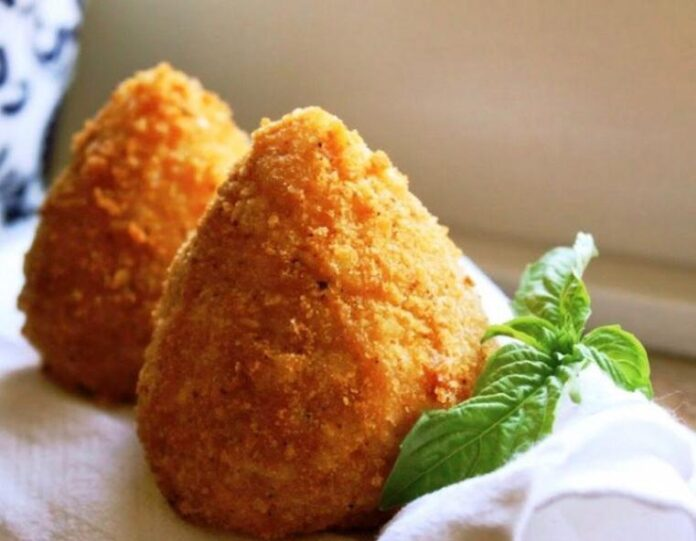
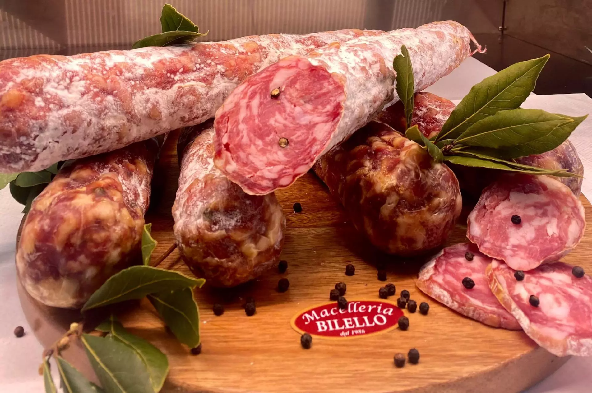

CIBO
Il cibo di Palermo, una delle città più affascinanti e culinarie d'Italia, è un'esperienza sensoriale unica che riflette la ricca storia e la vivace cultura della regione siciliana. Nella pittoresca Palermo, le strade si riempiono di aromi irresistibili provenienti da mercati vivaci e autentiche osterie.
LA PIZZA

La pizza a Torino, come in molte altre parti d'Italia, riflette una tradizione culinaria ricca e variegata. Tuttavia, è importante notare che la pizza tradizionale italiana ha le sue radici principalmente nel sud del paese, mentre il nord, incluso Torino, può presentare influenze diverse.
GLI ARANCINI
Gli arancini di Torino potrebbero presentare una variante più creativa rispetto alla versione tradizionale siciliana. Immaginiamo un arancino di riso con un guscio dorato arricchito da una nota di zafferano, caratteristica tipica della cucina piemontese che ama mescolare sapori tradizionali con influenze innovative.
IL SALAME
Il Salame di Torino si presenta con un aspetto invitante: un insaccato cilindrico dalla consistenza compatta e una superficie uniformemente ricoperta da una sottile patina bianca, risultato del processo di stagionatura. La carne utilizzata, spesso carne suina di alta qualità, è macinata finemente per garantire una consistenza omogenea e una distribuzione equilibrata delle spezie.